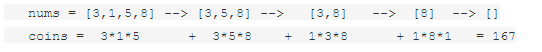
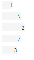

Hard Questions
Hard 1
Word Break II
Given a string s and a dictionary of words dict, add spaces in s to construct a sentence where each word is a valid dictionary word.
Return all such possible sentences.
For example, given
s = "catsanddog"
dict = ["cat", "cats", "and", "sand", "dog"]
A solution is ["cats and dog", "cat sand dog"]
Hard 2
Palindrome Partitioning II
Given a string s, partition s such that every substring of the partition is a palindrome.
Return the minimum cuts needed for a palindrome partitioning of s.
For example, given s = "aab",
Return 1 since the palindrome partitioning ["aa","b"] could be produced using 1 cut
Hard 3
Skyline Problem
A city's skyline is the outer contour of the silhouette formed by all the buildings in that city when viewed from a distance. Now suppose you aregiven the locations and height of all the buildings as shown on a cityscape photo (Figure A), write a program to output the skylineformed by these buildings collectively (Figure B).

The geometric information of each building is represented by a triplet of integers [Li, Ri, Hi], where Li and Ri are the x coordinates of the left and right edge of the ith building, respectively, and Hi is its height. It is guaranteed that 0 ≤ Li, Ri ≤ INT_MAX, 0 < Hi ≤ INT_MAX, and Ri - Li > 0. You may assume all buildings are perfect rectangles grounded on an absolutely flat surface at height 0.
For instance, the dimensions of all buildings in Figure A are recorded as: [ [2 9 10], [3 7 15], [5 12 12], [15 20 10], [19 24 8] ].
The output is a list of "key points" (red dots in Figure B) in the format of [ [x1,y1], [x2, y2], [x3, y3], ... ]that uniquely defines a skyline. A key point is the left endpoint of a horizontal line segment. Note that the last key point, where the rightmost building ends, is merely used to mark the termination of the skyline, and always has zero height. Also, the ground in between any two adjacent buildings should be considered part of the skyline contour.
For instance, the skyline in Figure B should be represented as:[ [2 10], [3 15], [7 12], [12 0], [15 10], [20 8], [24, 0] ].
Notes:
- The number of buildings in any input list is guaranteed to be in the range
[0, 10000]. - The input list is already sorted in ascending order by the left x position
Li. - The output list must be sorted by the x position.
- There must be no consecutive horizontal lines of equal height in the output skyline. For instance,
[...[2 3], [4 5], [7 5], [11 5], [12 7]...]is not acceptable; the three lines of height 5 should be merged into one in the final output as such:[...[2 3], [4 5], [12 7], ...]
Hard 4
N-Queen Problem
The n-queens puzzle is the problem of placing n queens on an n×n chessboard such that no two queens attack each other.

Given an integer n, return all distinct solutions to the n-queens puzzle.
Each solution contains a distinct board configuration of the n-queens' placement, where 'Q' and '.' both indicate a queen and an empty space respectively.
For example,
There exist two distinct solutions to the 4-queens puzzle:

Hard 5
Sherlock and Watson
Watson gives Sherlock an array A1,A2...AN.
He asks him to find an integer M between P and Q(both inclusive), such that, min {|Ai-M|, 1 ≤ i ≤ N} is maximised. If there are multiple solutions, print the smallest one.
Input Format
The first line contains N. The next line contains space separated N integers, and denote the array A. The third line contains two space separated integers denoting P and Q.
Output Format
In one line, print the required answer.
Constraints
1 ≤ N ≤ 102
1 ≤ Ai ≤ 109
1 ≤ P ≤ Q ≤ 109
Sample Input
3
5 8 14
4 9
Sample Output
4
Explanation
For M = 4,6,7, or 9, the result is 1. Since we have to output the smallest of the multiple solutions, we print 4.
Hard 6
Balloon Problem
Given n balloons, indexed from 0 to n-1. Each balloon is painted with a number on it represented by array nums. You are asked to burst all the balloons. If the you burst balloon i you will get nums[left] * nums[i] * nums[right] coins. Here left and right are adjacent indices of i. After the burst, the left and right then becomes adjacent.
Find the maximum coins you can collect by bursting the balloons wisely.
Note:
(1) You may imagine nums[-1] = nums[n] = 1. They are not real therefore you can not burst them.
(2) 0 ≤ n ≤ 500, 0 ≤ nums[i] ≤ 100
Example:
Given [3, 1, 5, 8]
Return 167

Hard 7
Binary Tree Traversal
Given a binary tree, return the postorder traversal of its nodes' values.
For example:
Given binary tree {1,#,2,3},

return [3,2,1].
Note: Recursive solution is trivial, could you do it iteratively?
Hard 8
Data Stream as Disjoint Intervals
Given a data stream input of non-negative integers a1, a2, ..., an, ..., summarize the numbers seen so far as a list of disjoint intervals.
For example, suppose the integers from the data stream are 1, 3, 7, 2, 6, ..., then the summary will be:
[1, 1]
[1, 1], [3, 3]
[1, 1], [3, 3], [7, 7]
[1, 3], [7, 7]
[1, 3], [6, 7]
Hard 9
Jump Game
Given an array of non-negative integers, you are initially positioned at the first index of the array.
Each element in the array represents your maximum jump length at that position.
Your goal is to reach the last index in the minimum number of jumps.
For example:
Given array A = [2,3,1,1,4]
The minimum number of jumps to reach the last index is 2. (Jump 1 step from index 0 to 1, then 3 steps to the last index.)
Hard 10
Chef and Tower
Chef holds all his secret recipes inside his house. For this reason, Chef wants to make his house secure. To do so, Chef wants to install guard towers in his house.
Unfortunately, due to high costs, Chef can only activate 3 guard towers each night. Chef considers his housesafe if the triangle formed by these 3 guard towers as vertices strictly contains his house. Chef's house is located at (0, 0).
On the ith day, Chef plans to install a guard tower at location (xi, yi). Chef wants to know how effective each installation is. Specifically, after every installation, Chef wants to know the number of subsets of 3 guard towers he can activate so that his house becomes safe. Please help him answer this question!
This is an online problem, so you won't get the next point unless you answer the question first. Don't forget to flush the output after every print statement. Please see the note section for details about how to flush the standard output.!
Input
The first line of input contains a single integer N. The next N lines describe the points.
The ith line contains two integers xi and yi denoting the location of Chef's ith guard tower, (xi, yi).
Output
Output N lines. The ith line must contain a single integer, the answer to Chef's question after the ith installation.
Constraints
|xi|, |yi| ≤ 106
The points are distinct.
(xi, yi) ≠ (0, 0)
Subtasks
Subtask #1: (11 points) 3 ≤ N ≤ 1000
Subtask #2: (24 points) 3 ≤ N ≤ 12000
Subtask #3: (65 points) 3 ≤ N ≤ 400000
Example
Input:
6
2 3
3 2
-1 -1
3 3
4 1
5 5
Output:
0
0
1
1
2
2
Explanation
After the first and second installations, there aren't enough guard towers for Chef to choose from.
After the third and fourth installations, there is one set of guard towers that make Chef's house safe:{(2, 3), (3, 2), (-1, -1)}.
After the fifth and sixth installations, there are two sets of guard towers that make Chef's house safe:{(2, 3), (3, 2), (-1, -1)} and {(2, 3), (4, 1), (-1, -1)}.
Hard 11
Write a function that returns the elements on odd positions in a list
Hard 12
Given an int array, return a new array with double the length where its last element is the
same as the original array, and all the other elements are 0. The original array will be length 1 or more. Note: by default, a new int array contains all 0's.
Ex.
makeLast([4, 5, 6]) → [0, 0, 0, 0, 0, 6]
makeLast([1, 2]) → [0, 0, 0, 2]
makeLast([3]) → [0, 3]
Hard 13
Given three ints, a b c, return true if two or more of them have the same rightmost digit. The ints are non-negative. Note: the % "mod" operator computes the remainder, e.g. 17 % 10 is 7.
Ex.
lastDigit(23, 19, 13) → true
lastDigit(23, 19, 12) → false
lastDigit(23, 19, 3) → true